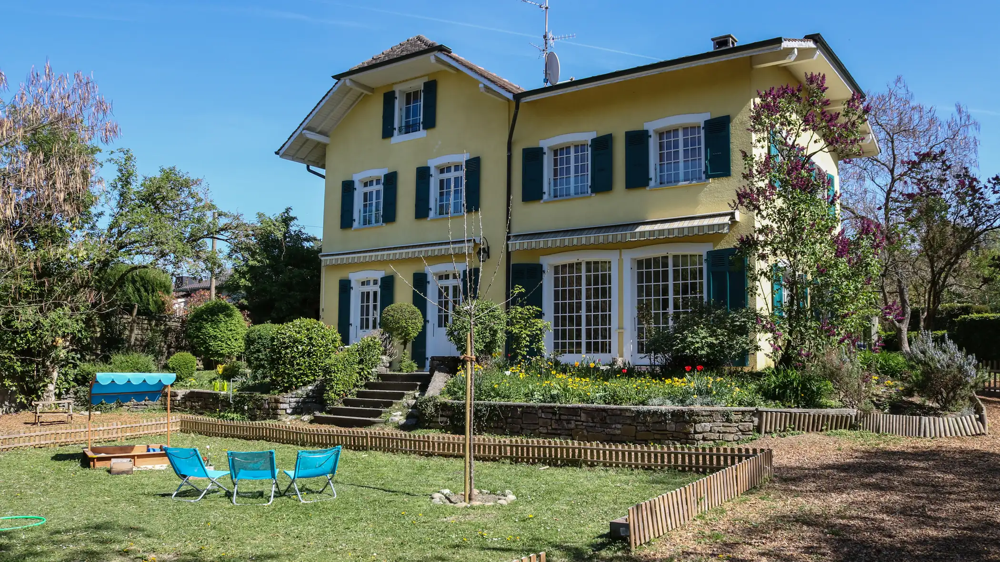
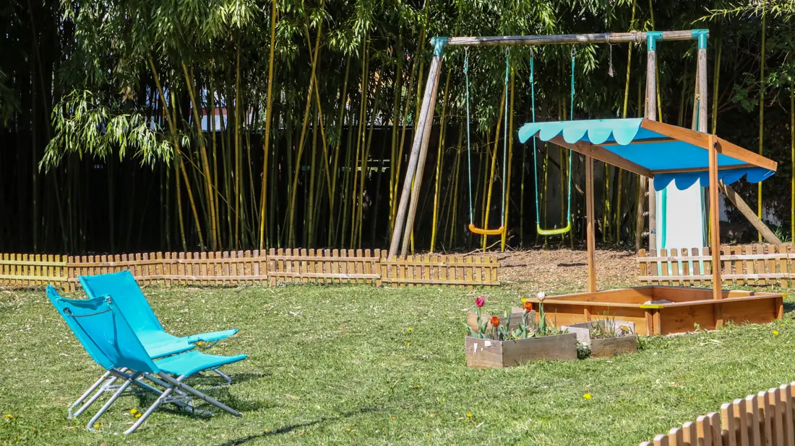
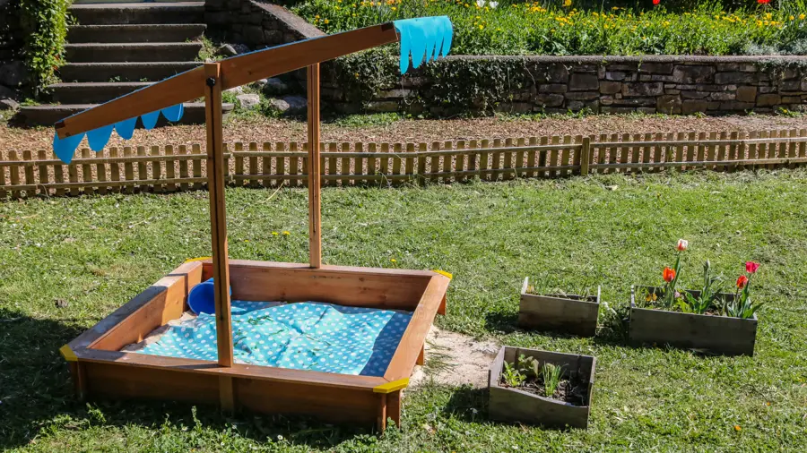
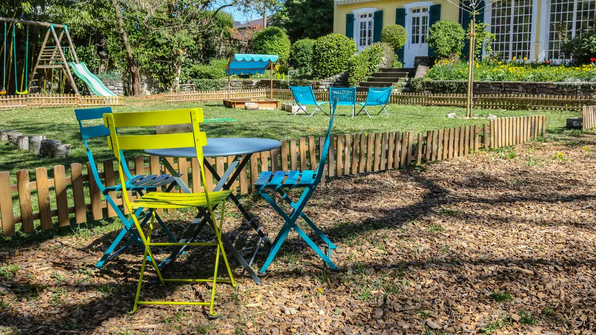
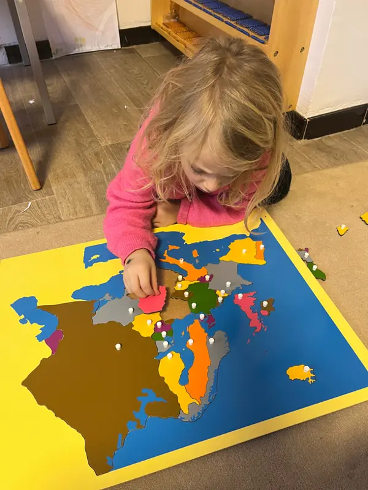
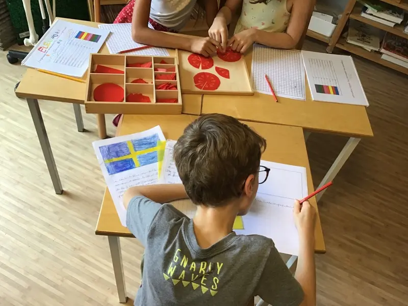

Apprendre dans un parc de 3 000 m²
École Montessori bilingue français-anglais pour les enfants de 3 à 12 ans, à Vésenaz, depuis 2011.

Un coin de verdure, à quelques minutes de la ville
Les cinq classes et l’administration sont réparties dans quatre maisons, au milieu d’un parc arboré. Il est entièrement clôturé : les enfants observent la nature et explorent chaque recoin du jardin en toute sécurité.
- Arbres variés, bambous géants, potager
- Jeux d’agilité, bac à sable, balançoires
- Parking avec places dépose-minute
- Bus TPG ligne G, arrêt Petray, devant l’école



Trois âges, une même méthode
Les enfants entrent dès trois ans révolus dans l’une des deux classes bilingues, encadrées chacune par trois enseignantes.
Les plus jeunes peuvent être accueillis à mi-temps, jusqu’à 13 h 30, puis à temps plein, jusqu’à 15 h 30, quand ils sont prêts. Dans les deux cas, le déjeuner est pris à l’école.

Quand le bon moment est venu, en général vers six ans, l’enfant passe dans le bâtiment « des grands », où six enseignants suivent le programme Montessori et le Plan d’études romand (3P à 8P Harmos).
L’école reste bilingue ; l’allemand est enseigné dès six ans. Des sorties pédagogiques sportives, culturelles et historiques sont organisées.

Après la classe, les enfants peuvent rester pour des activités artistiques ou sportives sans quitter l’école : piano, robotique, travail sur bois, musique, mindfulness.
Une psychologue et une ergothérapeute sont aussi présentes sur le site.
La journée, du lundi au vendredi
Les horaires affichés sont ceux du lundi, mardi, jeudi et vendredi. Un accueil du mercredi est possible.
- 8 h – 8 h 30Arrivée à l’école, selon la classe.
- 13 h 30Fin de la matinée pour les enfants de 3-6 ans à mi-temps, après le repas de midi.
- 15 h 30Fin de la journée des 3-6 ans à temps plein.
- 16 hFin de la journée des 6-12 ans.
- Jusqu’à 18 h 15Parascolaire pour les enfants scolarisés à temps plein.
Des enseignantes de partout, une seule méthode
Quatorze enseignant(e)s venus de France, de Suisse, de Grande-Bretagne, des États-Unis, d’Afrique du Sud, d’Allemagne… Elles et ils sont titulaires des diplômes 3-6 ans ou 6-12 ans de l’Association Montessori Internationale (AMI), ou d’un diplôme équivalent.
Sport et musique, mais aussi Brain Gym, RMT et IMP, font partie du quotidien.
- Deux langues, une personne pour chacune
- Le français et l’anglais sont parlés par des enseignantes dont c’est la langue maternelle.
- Reconnue par l’Association Montessori Suisse
- L’école est membre de l’AM(S) pour les sections 3-6 ans et 6-12 ans.
- École labellisée Eco-Schools
- Depuis 2022.
Venez visiter avec votre enfant
Remplissez la fiche de pré-inscription, puis appelez la directrice, Nancy Ramu, pour prendre rendez-vous.
info@montessori-rive-gauche.ch
Ce contact est destiné aux parents. Pour une candidature, voir les offres d’emploi de l’école.